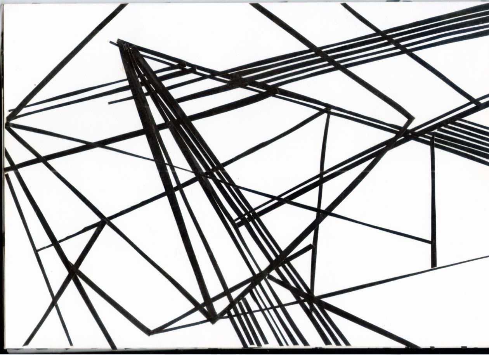
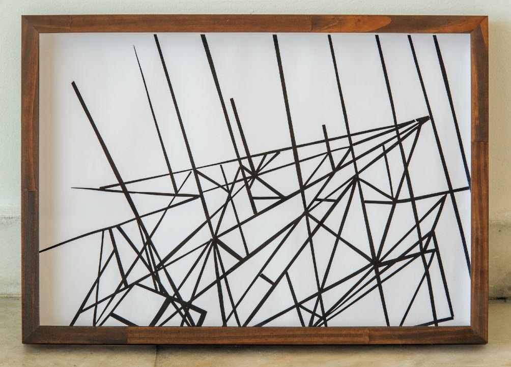
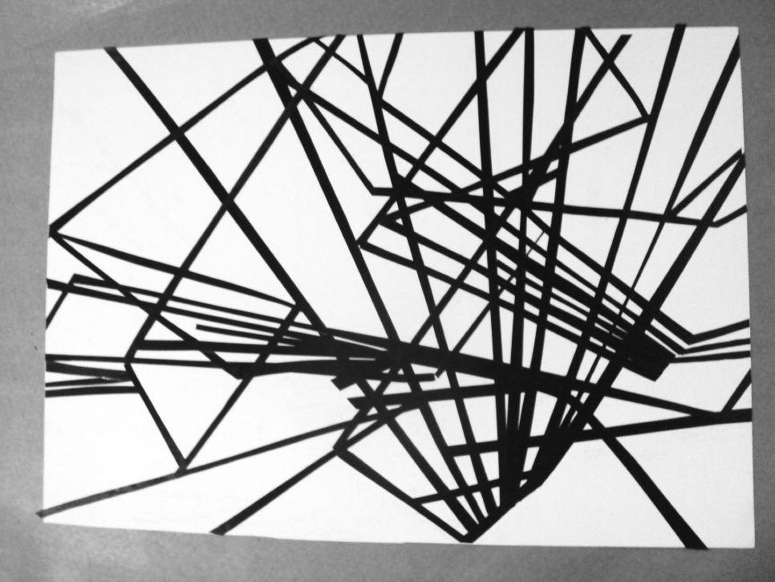
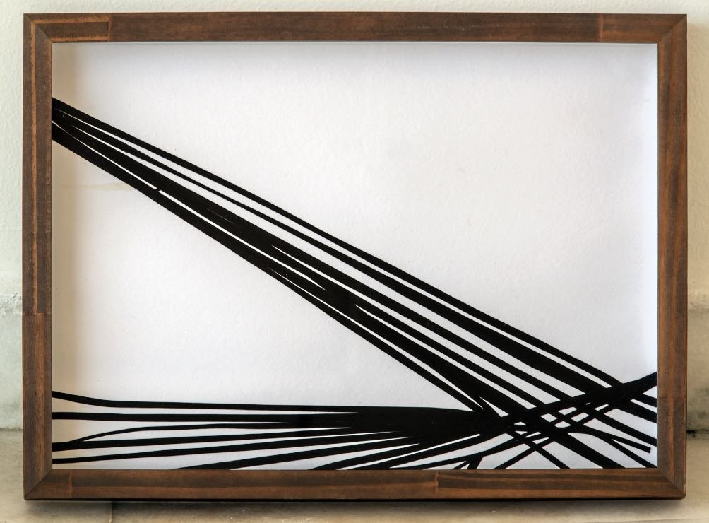
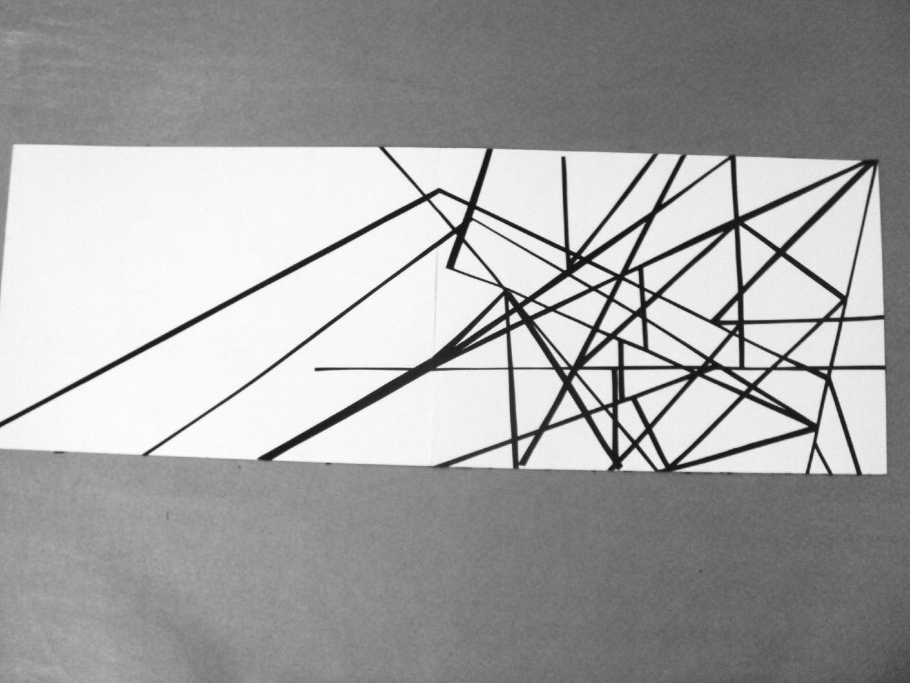
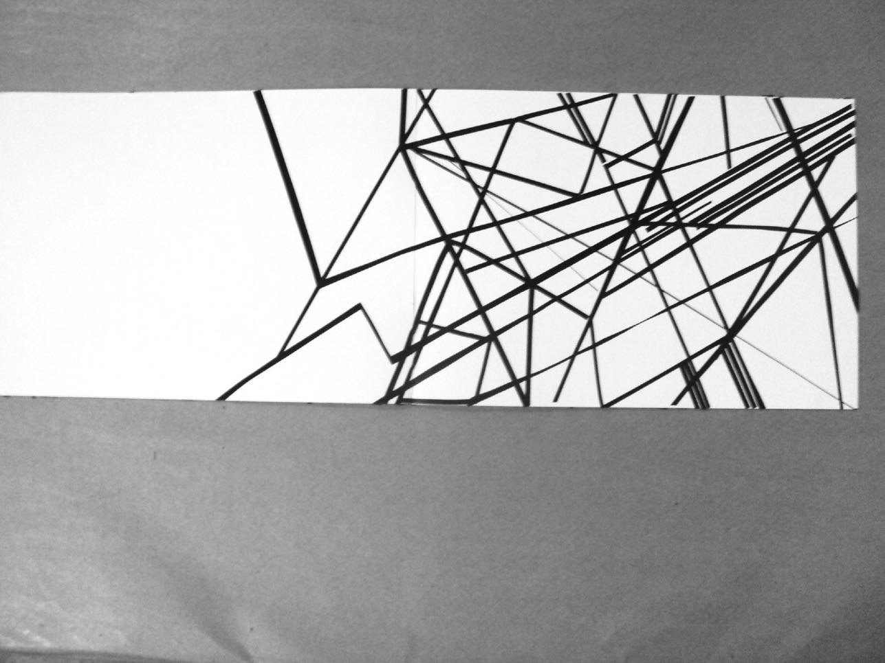

Desenhos








Linhas de fita isolante preta cruzam o papel em direções que mudam a cada encontro. Os desenhos acompanham a obra desde 2007 e estão na origem das Esquinas: trajetos, cruzamentos, possíveis encontros.
- Materiais
- Fita isolante sobre papel
- Dimensões
- Tamanhos variados (20 × 30, 50 × 40, 40 × 20 cm)
- Local
- Casa de Cultura Laura Alvim, na exposição Sonar (2013)